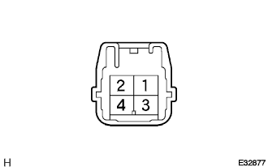

BLOWER RESISTOR (w/o Heater) > INSPECTION |
| 1. INSPECT BLOWER RESISTOR |
 |
Measure resistance between terminals 1 and 4.
Inspect blower resistor.
Connect the positive (+) lead to terminal 4 through a 12 V to 3.4 W test bulb and negative (-) lead to terminal 2.
Check the test bulb lights up when another positive (+) lead is connected to terminal 2 through a 12 V to 3.4 W test bulb.
If operation is not as specified, replace the blower resistor.